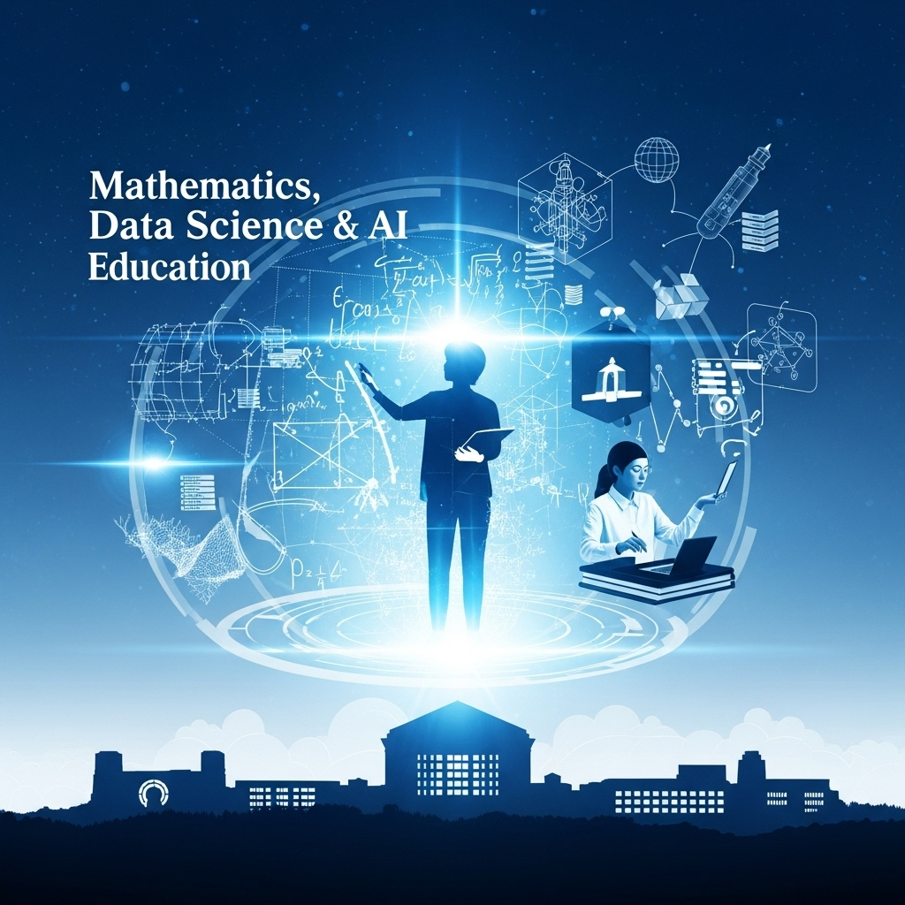
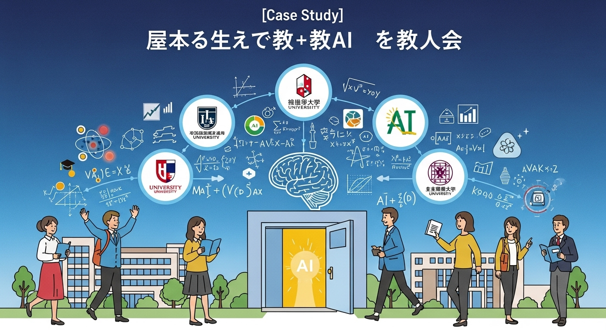

文系出身者必見！大学の数理・データサイエンス・AI教育プログラムで未来を掴む
導入
「データサイエンス」「AI（人工知能）」——これらの言葉を耳にしない日はないほど、私たちの社会は急速に変化しています。スマートフォンのアプリから、ネットショッピングのおすすめ機能、さらには企業の経営戦略に至るまで、あらゆる場面でデータとAIが活用される時代になりました。
このような時代の流れの中で、「自分の仕事は将来どうなるのだろう」「新しいスキルを身につけなければ、取り残されてしまうかもしれない」と、漠然とした不安を感じている方もいらっしゃるのではないでしょうか。特に、これまで数字やプログラミングとはあまり縁のなかった文系出身の方にとっては、「データサイエンスなんて、理系の人のためのものでしょう？」という思いが、新しい一歩を踏み出すのをためらわせているかもしれません。
もし、あなたがそう感じているのなら、この記事はまさにあなたのために書かれました。
実は今、国を挙げて、文系・理系を問わず全ての大学・高専生が数理・データサイエンス・AIの基礎を学べる環境づくりが進められています。その中心となっているのが、文部科学省が認定する「数理・データサイエンス・AI教育プログラム」です。このプログラムは、数学やプログラミングに苦手意識を持つ文系出身者でも、基礎から体系的に、そして安心して学べるように設計されています。
この記事では、そんな「大学の数理・データサイエンス・AI教育プログラム」が、あなたの未来にとってどれほど大きな可能性を秘めているのかを、ゆっくり、そして丁寧にお伝えしていきます。プログラムの具体的な内容から、学ぶことのメリット・デメリット、あなたにぴったりのプログラムの選び方、そして修了後のキャリアパスまで。この記事を読み終える頃には、データサイエンスやAIが、もはや遠い世界の話ではなく、あなたの未来を豊かにするための強力なツールであることに気づいていただけるはずです。
さあ、一緒に未来の扉を開くための、新しい学びの世界を覗いてみませんか？
「数理・データサイエンス・AI教育プログラム」とは？文系でも学ぶ意義

「大学のプログラムでデータサイエンスを学ぶ」と聞くと、少し敷居が高く感じられるかもしれません。しかし、その実態を知れば、文系出身のあなたにとっても、いかに身近で価値のある学びであるかがお分かりいただけるはずです。まずは、このプログラムがどのようなもので、なぜ今、これほどまでに注目されているのか、その背景から紐解いていきましょう。
文部科学省が推進する認定制度の概要
「数理・データサイエンス・AI教育プログラム認定制度」は、文部科学省が2021年度から開始した、大学や高等専門学校における教育プログラムの質を保証するための制度です。国が「お墨付き」を与えることで、学生や社会人が安心して質の高い教育を受けられる環境を整えることを目的としています。
この制度の背景には、急速なデジタル化の進展（DX：デジタルトランスフォーメーション）と、それに伴う社会構造の変化があります。AIやIoT（モノのインターネット）といった技術が社会に浸透する中で、国際的な競争力を維持・強化するためには、分野を問わず、全ての人がデータやAIを理解し、活用できる能力（リテラシー）を身につけることが不可欠である、という強い危機感が政府にはありました。そこで、将来の日本を担う人材を育成する高等教育機関において、体系的かつ質の高い教育を全国的に展開するために、この認定制度が創設されたのです。
認定プログラムは、学習レベルに応じて主に2つの区分に分けられています。
1. リテラシーレベル
これは、まさに文系・理系を問わず、全ての学生が身につけるべき基礎的な素養を育成することを目的としたプログラムです。
- 目標：社会に出て、データやAIがどのように活用されているかを理解し、その恩恵を享受し、情報モラルを持って適切に使いこなすことができるようになること。
- 内容：データサイエンスの基本的な考え方、AIが社会に与える影響、情報セキュリティや倫理に関する知識、簡単なデータ分析ツールの使い方など、幅広い教養として学ぶ内容が中心です。数学的な厳密さや高度なプログラミングよりも、概念の理解や事例の学習に重点が置かれています。
2. 応用基礎レベル
リテラシーレベルから一歩進んで、自らの専門分野においてデータサイエンスやAIを実践的に活用できる人材を育成することを目的としています。
- 目標：自分の専門分野（経済学、法学、文学、社会学など）が抱える課題に対し、データを用いて分析し、解決策を導き出すことができるようになること。
- 内容：リテラシーレベルの内容に加え、統計学の基礎、機械学習の初歩、Pythonなどのプログラミング言語を用いたデータ分析手法、データの可視化技術などをより実践的に学びます。文系学生であれば、例えば「マーケティングデータの分析」「SNSデータのテキストマイニング」「政策評価のための統計分析」といった、より具体的なテーマに取り組むことになります。
この認定制度があることで、私たちは「どの大学のプログラムなら、一定の質が担保されているのか」を客観的に判断することができます。これは、学びたいと考える社会人や学生にとって、非常に心強い指標と言えるでしょう。
数理・DS・AI教育の重要性と社会ニーズ
では、なぜ今、これほどまでに数理・データサイエンス・AI（以下、DS・AI）教育が重要視されているのでしょうか。その理由は、現代社会が直面している大きな変化と、それに伴う人材ニーズの高まりにあります。
一昔前まで、ビジネスにおける意思決定は、経営者の「経験」や「勘」に頼る部分が大きいものでした。しかし、インターネットやスマートフォンの普及により、私たちはかつてないほど膨大な量のデータを手軽に収集できるようになりました。顧客の購買履歴、ウェブサイトの閲覧ログ、SNSでの評判、工場のセンサーデータなど、ありとあらゆるものがデータとして記録されています。
これらのデータを単なる数字の羅列として放置するのではなく、適切に分析し、そこに隠されたパターンやインサイト（洞察）を見つけ出すことで、より客観的で精度の高い意思決定が可能になります。これを「データドリブンな意思決定」と呼びます。
例えば、
- マーケティング分野では、顧客の年齢や性別、過去の購入履歴といったデータを分析することで、一人ひとりに最適化された商品をおすすめすることができます。
- 金融分野では、過去の膨大な取引データをAIに学習させることで、不正な取引を検知したり、融資の審査精度を高めたりしています。
- 人事分野では、従業員のパフォーマンスデータや勤怠データを分析し、離職の兆候を早期に発見したり、最適な人材配置を検討したりする取り組みが進んでいます。
- 公共政策の分野でも、交通量データや人口動態データを分析して、より効果的な都市計画やインフラ整備に役立てています。
このように、もはやDS・AIは一部のIT企業や研究者のためだけのものではありません。製造業、小売業、金融、医療、教育、行政など、あらゆる業界・職種で、データを読み解き、活用する能力が求められるようになっているのです。
企業が求める人材像も大きく変化しています。これまでは専門分野の知識が深ければ評価されていましたが、これからはそれに加えて「データリテラシー」が必須スキルとなりつつあります。文系出身者であっても、例えば営業職なら「顧客データを分析して効果的なアプローチを考えられる人材」、企画職なら「市場データを根拠に説得力のある企画を立案できる人材」が、そうでない人材よりも高く評価されるのは当然の流れと言えるでしょう。この社会的なニーズの急速な高まりこそが、DS・AI教育の重要性を何よりも雄弁に物語っています。
なぜ文系出身者でもプログラムを学べるのか
ここまで読んで、「社会のニーズは分かったけれど、やっぱり数学やプログラミングはハードルが高い…」と感じている方も多いかもしれません。その気持ちは、とてもよく分かります。しかし、どうか安心してください。大学の「数理・データサイエンス・AI教育プログラム」は、まさにそうした文系出身者の不安に寄り添う形で設計されています。
文系出身者でも安心して学べる理由は、主に3つあります。
第一に、初学者を前提とした体系的なカリキュラムが組まれている点です。
多くのプログラムでは、いきなり難しい数式や複雑なプログラミングコードを学ぶわけではありません。まずは、高校数学の復習から始めたり、「統計学とは何か」「AIで何ができるのか」といった概念的な理解から入ったりと、無理なく学習をスタートできるような工夫がされています。微分積分や線形代数といった数学も、データサイエンスで「なぜそれが必要なのか」という目的とセットで学ぶため、高校時代にただ公式を暗記したのとは全く異なる、面白さや納得感を持って取り組むことができるでしょう。
第二に、文系出身者の強みが活かせる学問であるという点です。
データサイエンスは、単に数字を計算したり、プログラムを書いたりするだけの学問ではありません。最も重要なのは、「何を解決するために、どんなデータを、どのように分析するのか」という「課題設定能力」です。この能力は、社会の構造や人々の行動、文化的な背景を深く理解している文系出身者こそが、大いに発揮できる強みです。
例えば、「若者の消費行動の変化を分析したい」という課題があったとします。理系の専門家は高度な分析手法を知っているかもしれませんが、「なぜ若者の消費行動が変化したのか」という背景にある社会学的な考察や心理学的な洞察がなければ、意味のある分析はできません。
また、分析結果をただグラフや数字で示すだけでなく、それが何を意味するのかを分かりやすく説明し、相手を説得する「ストーリーテリング能力」や「コミュニケーション能力」も極めて重要です。これもまた、レポート作成やプレゼンテーションの機会が豊富な文系学部で培われてきた能力が、直接的に活かせる部分です。
第三に、ツールの進化により、高度な数学やプログラミングの知識がなくても、ある程度のデータ分析が可能になっている点です。
もちろん、専門的なデータサイエンティストを目指すのであれば、数学やプログラミングの深い理解は不可欠です。しかし、ビジネスの現場でデータを活用するレベルであれば、Excelの高度な機能や、Tableau（タブロー）、Power BIといった、直感的な操作でデータを可視化・分析できる「BIツール」を使いこなすだけでも、大きな成果を上げることができます。大学のプログラムでは、こうしたツールの使い方についても学ぶ機会が多く設けられています。
データサイエンスの世界は、理系的な「計算能力」と、文系的な「課題設定能力」「解釈・伝達能力」の両輪が揃って初めて前に進みます。大学のプログラムは、文系出身者が持つ後者の能力を土台としながら、前者の能力を基礎から丁寧に補強してくれる、またとない機会なのです。
大学のプログラムで習得できるスキルと具体的な学習内容
では、実際に大学のプログラムに参加すると、どのようなスキルが身につき、どんなことを学ぶのでしょうか。ここでは、その具体的な中身について、より詳しく見ていきましょう。文系出身者の方でもイメージしやすいように、カリキュラムの例や実践的な学びの場についてもご紹介します。
プログラムで身につく主要スキル
大学の数理・データサイエンス・AI教育プログラム（特に応用基礎レベル）を修了することで、以下のような多岐にわたるスキルを体系的に習得することが期待できます。これらは、これからの社会で活躍するための、強力な武器となるでしょう。
1. データ収集・加工スキル
データ分析は、分析に適したデータがなければ始まりません。世の中に存在するデータは、そのままでは使えない「汚れた」状態であることがほとんどです。例えば、アンケートの回答に表記の揺れ（「男性」「男」など）があったり、必要な項目が欠けていたりします。このスキルは、様々な場所（データベース、Webサイトなど）から必要なデータを集め、分析しやすいように整理・整形（データクレンジング）する能力を指します。地味な作業に見えますが、データ分析プロジェクトの成功の約8割は、この前処理にかかっていると言われるほど重要なスキルです。
2. 統計分析スキル
データの背後にある意味や法則性を読み解くための基礎となるのが統計学です。平均値や中央値といった基本的な統計量の理解から、仮説検定（ある仮説が統計的に正しいと言えるか判断する手法）、回帰分析（複数の要素間の関係性を数式で表す手法）など、データから客観的な結論を導き出すための論理的な思考法と技術を身につけます。これにより、「経験上、こうだと思う」といった主観的な判断から脱却し、「データに基づくと、こう言える」という説得力のある主張ができるようになります。
3. 機械学習の基礎知識
AIの中核技術である機械学習の基本的な仕組みを理解します。例えば、膨大な量の犬と猫の画像をコンピュータに学習させ、新しい画像がどちらであるかを自動で判別させる「分類」や、過去の売上データから将来の売上を予測する「回帰」といった代表的な手法の原理を学びます。高度なアルゴリズムを自分で構築するレベルではなくとも、「機械学習で何ができて、何ができないのか」「どのような課題に適用できるのか」を理解していることは、ビジネスの企画立案において非常に大きなアドバンテージとなります。
4. プログラミングスキル（Python, Rなど）
データ分析の世界で広く使われているプログラミング言語である「Python（パイソン）」や「R（アール）」の基礎を学びます。プログラミングと聞くと難しく感じるかもしれませんが、プログラムの目的は、大量のデータを効率的に処理することです。手作業では何日もかかるようなデータ集計やグラフ作成も、プログラムを書けば一瞬で終わらせることができます。プログラムを通じて、コンピュータに正確な指示を与えるための論理的な思考力が鍛えられます。
5. データ可視化（ビジュアライゼーション）スキル
分析結果を他者に効果的に伝えるためには、データを分かりやすく「見える化」する技術が不可欠です。単なる数字の羅列ではなく、棒グラフ、折れ線グラフ、散布図、地図など、伝えたいメッセージに最も適した表現方法を選択し、説得力のある資料を作成する能力を養います。前述したTableauなどのBIツールを使いこなし、誰が見ても直感的に理解できるダッシュボードを作成するスキルも含まれます。
6. 課題発見・解決能力
これら1～5の技術的なスキルを統合し、現実社会の課題解決に応用する能力です。目の前のビジネス課題や社会問題に対して、「この課題を解決するためには、どのようなデータが必要か？」「どのような分析手法が適切か？」「分析結果から、どのようなアクションを起こすべきか？」といった一連のプロセスを、自ら考え、実行する力が身につきます。これこそが、データサイエンスを学ぶ最終的な目標と言えるでしょう。
文系出身者も安心！カリキュラム例
多くの大学では、文系出身者がスムーズに学習を進められるよう、段階的で丁寧なカリキュラムを用意しています。ここでは、ある大学の「応用基礎レベル」プログラムを想定した、2年間のカリキュラム例をご紹介します。
【1年次：基礎固めのステージ】
- 春学期（前期）
- 「データサイエンス入門」：データサイエンスとは何か、社会でどのように活用されているのかを豊富な事例と共に学びます。AI倫理や個人情報保護といった、データを扱う上で必須となる知識にも触れます。
- 「情報リテラシーとプログラミング基礎 I」：コンピュータの基本的な仕組みから、WordやExcelの応用的な使い方、そしてプログラミング言語Pythonの初歩（変数、条件分岐、繰り返しなど）を学びます。
- 「文系のための数学基礎」：高校数学（特に「数学I・A」「数学II・B」）の復習から始め、データ分析に必要な微分・積分、線形代数（行列など）の基本的な考え方を、グラフや具体例を多用しながら学びます。
- 秋学期（後期）
- 「統計学入門」：記述統計（平均、分散など）と推測統計（検定、推定）の基礎を学びます。Excelの分析ツールを使い、実際にデータを集計・分析しながら、統計的なものの見方を身につけます。
- 「プログラミング基礎 II」：Pythonを使ったデータハンドリングを学びます。PandasやNumPyといった、データ分析で頻繁に使われるライブラリ（便利な機能のセット）の使い方を習得します。
- 「データベース入門」：大量のデータを効率的に管理するためのデータベースの仕組みと、SQLというデータベース操作言語の基礎を学びます。
【2年次：実践・応用のステージ】
- 春学期（前期）
- 「機械学習概論」：回帰、分類、クラスタリングといった機械学習の代表的な手法について、その理論とPythonを使った実装方法を学びます。
- 「データビジュアライゼーション演習」：TableauなどのBIツールを用い、与えられたデータを基に、分かりやすく、示唆に富んだダッシュボードやレポートを作成する演習を行います。
- 「専門分野への応用 I（例：マーケティング分析）」：自身の専門分野や興味のある分野に特化したデータ分析を学びます。例えば、顧客データを用いたセグメンテーション分析や、広告効果の測定方法などを実践的に学びます。
- 秋学期（後期）
- 「専門分野への応用 II（例：テキストマイニング）」：SNSの投稿やアンケートの自由回答といったテキストデータを分析する手法を学びます。どのような言葉が多く使われているか、どのような感情が表現されているかを可視化する技術を習得します。
- 「データサイエンスPBL（Project Based Learning）」：これまでに学んだ知識とスキルを総動員し、チームで実際の課題に取り組むプロジェクト型の授業です。企業から提供されたリアルなデータを使って、課題発見からデータ分析、解決策の提案、最終プレゼンテーションまでの一連のプロセスを経験します。
このように、基礎から応用へ、理論から実践へと、スモールステップで学習を進められるように設計されているため、文系出身者でも途中で挫折することなく、着実にスキルを身につけていくことが可能です。
実践的な学び「データサイエンス・アイデアコンテスト」
座学で知識をインプットするだけでなく、それを実際に使ってみる「アウトプット」の機会は、スキルの定着に欠かせません。多くの大学では、そのための実践的な学びの場として、PBL型授業の他に、「データサイエンス・アイデアコンテスト」や「データソン（Datathon）」といったイベントを開催しています。
これは、特定のテーマ（例：「地域の観光業を活性化させるデータ活用法」「食品ロスを削減するためのAI活用アイデア」など）について、参加者がチームを組み、与えられたデータを分析して、課題解決のためのアイデアや施策を競い合うイベントです。
このようなコンテストに参加することには、授業だけでは得られない多くのメリットがあります。
- リアルな課題解決能力の向上：教科書の中の問題とは異なり、正解が一つではない、複雑で曖昧な現実の課題に取り組むことで、実践的な問題解決能力が飛躍的に向上します。
- チームワークとコミュニケーション能力の育成：異なる知識やスキルを持つメンバーと協力し、役割分担をしながら一つの目標に向かう経験は、社会に出てから必ず役立ちます。自分の分析結果をチームメンバーに分かりやすく説明したり、他のメンバーの意見を傾聴したりする中で、コミュニケーション能力も磨かれます。
- プレゼンテーション能力の強化：分析して終わりではなく、その結果や提案を、審査員である教員や企業の実務家に対して、制限時間内に説得力を持って伝える必要があります。これにより、人前で話す度胸や、ロジカルな説明能力が身につきます。
- モチベーションの向上とネットワーキング：他のチームの優れた発表を見ることで、新たな視点や分析手法を学ぶことができ、学習意欲がさらに高まります。また、イベントを通じて、教員や企業の方、そして同じ志を持つ仲間との貴重なネットワークを築くことができます。
こうした実践的な経験を通じて、知識は生きた「スキル」へと昇華していきます。大学のプログラムを選ぶ際には、このようなアウトプットの機会がどれだけ用意されているかも、重要なチェックポイントの一つと言えるでしょう。
プログラムを学ぶメリット
大学の数理・データサイエンス・AI教育プログラムを受講することは、あなたのキャリアと人生に、計り知れないほどのポジティブな影響をもたらす可能性があります。ここでは、その具体的なメリットを4つの側面に分けて、詳しく解説していきます。
メリット１．キャリアチェンジ・スキルアップの機会創出
最大のメリットは、何と言ってもキャリアの選択肢が劇的に広がることです。DS・AIスキルは、特定の業界だけでなく、あらゆる分野で求められる「ポータブルスキル（持ち運び可能なスキル）」です。このスキルを身につけることで、あなたのキャリアプランはより自由で、豊かなものになるでしょう。
キャリアチェンジの可能性
これまで文系のキャリアしか考えていなかった方でも、データサイエンスを学ぶことで、全く新しい職種への扉が開かれます。
- データアナリスト：企業の持つ様々なデータを分析し、ビジネス上の意思決定をサポートする専門職。
- マーケティングリサーチャー：市場調査や消費者行動データを分析し、商品開発や販売戦略に活かす職種。
- 経営企画・事業企画：市場データや競合の動向、自社の業績データを分析し、会社の未来を左右する戦略を立案する部署。
- Webアナリスト/グロースハッカー：ウェブサイトのアクセス解析データなどを用いて、サービスの改善やユーザー数の増加を目指す職種。
これらの職種は、従来は理系出身者が多いイメージでしたが、近年では文系出身者が持つ「ビジネス課題を理解する力」や「コミュニケーション能力」と、後天的に習得した「データ分析スキル」を兼ね備えた人材への需要が非常に高まっています。大学のプログラム修了という公的な証明は、未経験からのキャリアチェンジを目指す上で、非常に強力な武器となります。
現職でのスキルアップと価値向上
必ずしも転職だけが選択肢ではありません。現在の職場で、学んだスキルを活かすことでも、あなたの市場価値は大きく向上します。
- 営業職であれば、勘や経験に頼るだけでなく、顧客データを分析して「成約率の高い顧客層」を特定し、効率的な営業活動を展開できます。上司への報告も、「頑張ります」ではなく「このデータに基づくと、今月は目標達成可能です」と、説得力を持って説明できるようになるでしょう。
- 人事職であれば、従業員満足度調査のアンケート結果を統計的に分析し、より効果的な人事施策を立案できます。
- 企画・広報職であれば、SNSの反響をデータで分析し、次のキャンペーンの成功確率を高めることができます。
このように、どんな職種であっても、データという客観的な根拠を扱える人材は、組織の中で一目置かれる存在となります。それは、昇進やより責任のある仕事への抜擢といった、具体的なキャリアアップに直結していくはずです。
メリット２．業務におけるデータドリブンな意思決定向上
二つ目のメリットは、仕事の進め方そのものが変わり、質の高いアウトプットを生み出せるようになることです。データドリブンな意思決定能力は、現代のビジネスパーソンにとって必須のスキルと言っても過言ではありません。
主観から客観へ
私たちは日々の業務で、無意識のうちに自分の経験や思い込みに基づいて判断を下しがちです。「おそらく、この商品が若者に受けるだろう」「きっと、この施策が効果的だろう」といった判断は、時として大きな失敗を招きます。データサイエンスを学ぶことで、こうした主観的な判断から脱却し、「データを見る限り、AよりもBの商品のほうが20代女性からの支持が高い」「過去のデータから、Cの施策は費用対効果が低いと予測される」といった、客観的な事実に基づいた判断ができるようになります。
説得力の向上
データに基づいた主張は、圧倒的な説得力を持ちます。会議の場で、あなたが新しい企画を提案する場面を想像してみてください。
- Aさん：「最近のトレンドを考えると、このサービスは絶対に成功すると思います！私の感覚では、間違いありません！」
- Bさん：「市場調査データによると、ターゲット層の30%がこの種のサービスに強い関心を示しており、類似サービスの年間成長率は15%です。私たちが参入すれば、初年度でX円の売上が見込めます。こちらがその根拠となるデータです。」
どちらの提案が採用されやすいかは、火を見るより明らかでしょう。データを用いてロジカルに説明する能力は、あなたの意見に重みを与え、周囲を動かす力となります。
PDCAサイクルの高速化
ビジネスの基本であるPDCAサイクル（Plan-Do-Check-Act）の質も向上します。
- Plan（計画）：過去のデータや市場データを分析し、より精度の高い計画を立てる。
- Do（実行）：計画を実行する。
- Check（評価）：施策の結果をデータで正確に測定・評価する。何が成功要因で、何が失敗要因だったのかを客観的に分析する。
- Act（改善）：評価結果に基づき、次のアクションを改善する。
このサイクルをデータに基づいて回すことで、感覚的な試行錯誤に比べて、はるかに速く、そして確実に成果へと近づくことができるのです。
メリット３．論理的思考力と問題解決能力の強化
データサイエンスを学ぶプロセスは、それ自体が論理的思考力（ロジカルシンキング）と問題解決能力を鍛えるための、最高のトレーニングになります。この能力は、データ分析の場面に限らず、あらゆる仕事や日常生活においても役立つ、一生ものの財産となります。
データサイエンスにおける問題解決のプロセスは、一般的に以下のようなステップで進められます。
- 課題の設定：ビジネス上の漠然とした悩みから、「何を明らかにすれば問題が解決するのか」という、データで検証可能な問い（課題）を立てる。
- 仮説の構築：設定した課題に対して、「おそらく、こうではないか」という仮説を立てる。
- データ収集・分析計画：仮説を検証するために、どのようなデータが必要で、どのような分析手法を用いるべきかを計画する。
- データ分析の実行：計画に沿って、データを加工し、分析を実行する。
- 結果の解釈と結論：分析結果が何を示しているのかを解釈し、仮説が正しかったのかを判断し、結論を導き出す。
- アクションへの示唆：結論から、次に何をすべきかという具体的な行動（アクション）を提案する。
この一連の流れは、まさに論理的に物事を考え、問題を解決していくプロセスそのものです。このトレーニングを繰り返すことで、物事を構造的に捉え、複雑な事象を要素に分解し、それらの因果関係を冷静に考える力が自然と身についていきます。その結果、仕事で予期せぬトラブルが発生した際にも、感情的にならずに「問題の根本原因は何か」「解決のために必要な情報は何か」「考えられる選択肢は何か」と、冷静かつ論理的に対処できるようになるでしょう。
メリット４．大学の信頼性と体系的な学習環境
DS・AIスキルを学べる場所は、民間のオンラインスクールや書籍など、大学以外にも数多く存在します。その中で、あえて大学のプログラムを選ぶことには、他にはない大きなメリットがあります。
学術的な裏付けと体系性
大学のカリキュラムは、その分野の専門家である教授陣によって、学術的な知見に基づいて設計されています。流行りの技術を断片的に学ぶのではなく、「なぜこの手法が有効なのか」という理論的な背景から、「どのような歴史的経緯でこの学問が発展してきたのか」という文脈まで、深く、そして体系的に学ぶことができます。この知識の土台は、将来、新しい技術が登場した際にも、それを自力で理解し、応用していくための強固な基盤となります。
信頼性と公的な証明
特に文部科学省の認定プログラムを修了したという事実は、あなたのスキルレベルを客観的に証明する、信頼性の高い「お墨付き」となります。転職活動やキャリアアップの交渉において、「独学で勉強しました」と言うのと、「大学の認定プログラムを修了しました」と言うのとでは、相手に与える安心感や信頼度が大きく異なります。
豊富な学習リソース
大学には、最先端の研究論文にアクセスできる学術データベース、膨大な蔵書を誇る図書館、高性能なコンピュータが利用できる演習室など、学習をサポートするためのリソースが豊富に揃っています。また、教員への質問や相談がしやすい環境も、独学では得られない大きな利点です。
多様な人々とのネットワーク
大学のプログラムには、あなたと同じように新しいスキルを学ぼうとする、高い意欲を持った仲間たちが集まります。学部生、大学院生、そして社会人など、多様なバックグラウンドを持つ人々との交流は、大きな刺激となり、学習のモチベーションを維持する助けになります。ここで築いた人的ネットワークは、プログラム修了後も、情報交換をしたり、互いのキャリアを応援し合ったりする、かけがえのない財産となるでしょう。
これらのメリットを総合すると、大学のプログラムは、単なるスキル習得の場に留まらず、あなたの知的基盤を築き、キャリアの可能性を広げ、人生を豊かにするための投資であると言えるのです。
プログラム受講におけるデメリット
どんな素晴らしい学びにも、光があれば影もあります。大学の数理・データサイエンス・AI教育プログラムも例外ではありません。受講を決める前に、その現実的な側面、つまりデメリットや注意点についてもしっかりと理解し、覚悟しておくことが重要です。ここでは、事前に知っておくべき4つのポイントを正直にお伝えします。
デメリット１．学習期間と費用に関する考慮点
まず考えなければならないのが、時間とお金という、現実的なコストです。
学習期間
大学のプログラムは、短期集中型の民間スクールとは異なり、体系的な知識の習得を目指すため、ある程度の期間を要します。プログラムにもよりますが、履修証明プログラムなど社会人向けのものでも数ヶ月から1年、大学の正規の科目として履修する場合は1年〜2年間にわたって学習が続くことが一般的です。
特に社会人の方が受講する場合、この期間、仕事と学習を両立させる必要があります。平日の夜や週末の時間を学習に充てることになるため、プライベートな時間が大幅に減少することは覚悟しなければなりません。飲み会や趣味の時間を削り、強い意志を持って学習時間を確保し続ける必要があります。「なんとなく始めてみたけれど、仕事が忙しくて続かなかった」ということにならないよう、受講開始前に、自分の生活の中に学習時間をどう組み込むか、具体的な計画を立てることが不可欠です。
費用
大学のプログラムであるため、当然ながら学費がかかります。金額は大学やプログラムの内容によって様々ですが、国立大学の科目等履修生制度などを利用する場合でも数万円から数十万円、私立大学の本格的なプログラムや社会人向けの大学院などでは100万円以上かかることもあります。
これは決して安い投資ではありません。受講を検討する際には、この費用を支払うことで、将来的にどのようなリターン（昇進による収入アップ、より良い条件での転職など）が期待できるのかを冷静に考え、費用対効果を自分なりに評価する必要があります。また、教育訓練給付金制度など、国や自治体の支援制度が利用できる場合もあるため、事前にしっかりと情報収集しておくことをお勧めします。
デメリット２．未経験からの学習における難易度と覚悟
「文系でも学べる」と繰り返しお伝えしてきましたが、それは「楽に学べる」という意味ではありません。特に、数学やプログラミングに強い苦手意識を持つ方にとっては、学習の過程でいくつかの壁にぶつかることを覚悟しておく必要があります。
数学の壁
プログラムの序盤では、高校数学の復習から入ることが多いですが、学習が進むにつれて、データサイエンスの理論的背景を理解するために、線形代数（行列やベクトル）や微分・積分といった、より高度な数学の知識が必要となる場面が出てきます。数式を見ただけで頭が痛くなる、という方にとっては、この数学の壁が最初の大きな試練となるかもしれません。しかし、重要なのは、数学者になることではなく、あくまで「データ分析のツールとして数学を理解する」ことです。なぜこの数式が必要なのか、という目的意識を持って取り組むことで、高校時代とは違った面白さが見えてくるはずです。
プログラミングの壁
プログラミングもまた、多くの初学者がつまずきやすいポイントです。最初は、たった一つのカンマやスペルの間違いでプログラムが動かなくなり、エラーメッセージとの長い格闘が続くかもしれません。「自分には才能がないのではないか」と落ち込んでしまうこともあるでしょう。しかし、これは誰もが通る道です。大切なのは、完璧を目指さず、まずは簡単なコードを真似して書いて動かしてみること、エラーが出たらすぐに諦めずに、粘り強く原因を探す習慣をつけることです。この試行錯誤のプロセス自体が、論理的思考力を鍛える訓練になります。
これらの壁を乗り越えるためには、「新しいことを学ぶのだから、分からなくて当たり前」「すぐにできなくても、焦らず一歩ずつ進もう」という、良い意味での開き直りと、粘り強さが求められます。楽な道ではない、という覚悟を持つことが、挫折を防ぐための第一歩です。
デメリット３．プログラム修了後の自己学習の重要性
大学のプログラムを無事に修了したとしても、それで学習が終わりになるわけではありません。むしろ、そこが新たなスタートラインです。
DS・AIの分野は、技術の進歩が非常に速く、日進月歩で新しい分析手法やツールが登場します。昨日まで主流だった技術が、今日にはもう古くなっている、ということも珍しくありません。そのため、プログラムで学んだ知識だけで満足していると、あっという間に時代に取り残されてしまいます。
プログラム修了は、いわばこの分野の地図とコンパスを手に入れた状態です。その地図とコンパスを使いこなし、変化の激しい世界を航海し続けるためには、継続的な自己学習（セルフラーニング）が不可欠です。
具体的には、
- 技術系ブログやニュースサイトを定期的にチェックし、最新のトレンドを追う。
- オンライン学習プラットフォーム（Coursera, edXなど）で、興味のある分野の講座を追加で受講する。
- Kaggle（カグル）などのデータ分析コンペティションに参加し、実践的なスキルを磨き続ける。
- 勉強会やコミュニティに参加し、他の学習者や実務家と情報交換を行う。
といった習慣を身につける必要があります。「プログラムさえ修了すれば、一生安泰のスキルが手に入る」という考えは捨て、常に学び続ける姿勢を持つことが、この分野で活躍し続けるための絶対条件なのです。
デメリット４．全ての大学が同じレベルではないこと
文部科学省の認定制度は、プログラムの質を一定レベルで保証するものですが、それでも大学によって教育内容やレベル、特色には大きな差があるのが実情です。
教員の専門性と情熱
プログラムの質を最も左右するのは、教員の質です。データサイエンスの分野で最先端の研究を行っている教員がいるか、企業での実務経験が豊富な教員がいるか、そして何より、初学者に対して丁寧に教える情熱を持っているか、といった点は大学によって大きく異なります。
カリキュラムの実践度
理論的な講義が中心のプログラムもあれば、企業との連携プロジェクトなど、実践的な演習を重視するプログラムもあります。自分の学習目的（まずは理論をしっかり固めたいのか、とにかく実践的なスキルを身につけたいのか）に合わせて、カリキュ-ラムの内容を吟味する必要があります。
産業界との連携
企業との連携が密な大学では、実務家を講師として招いた特別講義があったり、企業の持つリアルなデータを使った演習が行われたり、インターンシップの機会が豊富だったりと、キャリアに直結する学びを得やすい傾向があります。
「認定プログラムだから、どこでも同じだろう」と安易に考えず、複数の大学のプログラムを比較検討し、シラバス（授業計画）を読み込んだり、説明会に参加して教員や在学生の話を聞いたりして、自分に最も合った場所を見つけ出す努力が求められます。この「大学選び」の手間も、一つのデメリットと言えるかもしれません。
これらのデメリットを事前に理解し、対策を考えておくことで、あなたはより現実的で、実り豊かな学習計画を立てることができるでしょう。
最適なプログラムの選び方
数ある大学のプログラムの中から、自分にとって本当に価値のある、最適な一つを見つけ出すことは、成功への第一歩です。ここでは、文系出身者のあなたがプログラムを選ぶ際に、特に重視すべき5つの視点をご紹介します。これらのポイントを一つひとつチェックしながら、じっくりと比較検討してみてください。
選び方１．文系出身者へのサポート体制
何よりもまず確認したいのが、数学やプログラミングの初学者、特に文系出身者に対するサポート体制がどれだけ充実しているか、という点です。カリキュラムの素晴らしさも大切ですが、つまずいた時に助けてくれる環境がなければ、学習を続けることは困難です。
チェックすべき具体的なサポート体制
- 補習授業やリメディアル教育：正規の授業とは別に、高校数学の復習やプログラミングの基礎を学ぶための補習クラスが用意されているか。
- TA（ティーチング・アシスタント）制度：授業中に分からないことを気軽に質問できる大学院生などのTAが配置されているか。演習の時間だけでなく、オフィスアワー（質問を受け付ける時間）が設けられているとさらに良いでしょう。
- 質問しやすい雰囲気：教員やTAが、初歩的な質問でも丁寧に対応してくれる文化があるか。これは説明会やオープンキャンパスに参加した際の雰囲気で感じ取ることができます。「こんなことも分からないのか」という態度を取られる環境では、学習意欲が削がれてしまいます。
- 学習相談・カウンセリング：学習の進め方やキャリアに関する悩みを相談できる専任のスタッフや教員がいるか。学習面だけでなく、精神的なサポート体制も重要です。
- 文系出身の修了生の事例：そのプログラムを修了した文系出身者が、どのようなキャリアを歩んでいるか、具体的な事例が公開されているか。ロールモデルの存在は、学習の大きな励みになります。
大学のウェブサイトやパンフレットを見るだけでなく、可能であればオンライン説明会や個別相談会に参加し、担当者に直接これらの点について質問してみることを強くお勧めします。その際の対応の丁寧さも、大学のサポート体制を測る良い指標になります。
選び方２．オンライン受講や学習形態
特に社会人の方が学ぶ場合、自分のライフスタイルに合った学習形態を選べるかどうかは、学習を継続するための死活問題となります。
主な学習形態の種類
- 対面型：キャンパスに通学して授業を受ける伝統的なスタイル。教員や他の受講生と直接コミュニケーションが取れるため、質問がしやすく、モチベーションを維持しやすいのがメリットです。一方で、時間や場所の制約が大きいのがデメリットです。
- オンライン・リアルタイム型：Zoomなどを用いて、決まった時間にオンラインで授業に参加するスタイル。場所の制約はありませんが、時間の制約はあります。ライブでの質疑応答が可能です。
- オンライン・オンデマンド型：録画された講義ビデオを、自分の好きな時間に視聴するスタイル。時間と場所の制約が最も少なく、仕事が不規則な方でも学びやすいのが最大のメリットです。繰り返し視聴できるため、復習にも便利です。ただし、自己管理能力が求められ、モチベーション維持が課題となります。
- ハイブリッド型：対面とオンラインを組み合わせたスタイル。例えば、基礎的な講義はオンデマンドで学び、演習やディスカッションは対面で行う、といった形式です。それぞれのメリットを享受できるため、近年増えている形態です。
確認すべきポイント
- 自分の生活（勤務時間、通勤時間、家庭の事情など）と両立できる学習形態か。
- オンライン受講の場合、録画された講義を後から見返すことは可能か。
- 欠席した場合のフォローアップ体制（資料の共有、補講など）は整っているか。
- 演習やグループワークなど、他の受講生と交流する機会はオンラインでも確保されているか。
「学びたい」という気持ちが強くても、物理的に続けられなければ意味がありません。無理なく、そして効果的に学習を進められる環境を選びましょう。
選び方３．実践カリキュラムと講師陣
理論を学ぶだけでなく、それを実際に使えるスキルとして身につけるためには、カリキュラムの実践度が非常に重要です。
実践カリキュラムのチェックポイント
- PBL（Project Based Learning）や演習の比率：講義形式の授業だけでなく、実際に手を動かして課題解決に取り組むPBLや演習が、カリキュラム全体の中でどれくらいの割合を占めているか。
- 扱うデータの種類：教科書的な綺麗なデータだけでなく、企業から提供された「生」のデータや、自分でWebから収集したデータなど、現実世界に近いデータを扱う機会があるか。
- 企業連携プロジェクトの有無：実際の企業が抱える課題に対して、データ分析を通じて解決策を提案するような、産学連携のプロジェクトが組み込まれているか。
- アウトプットの機会：学習の成果を発表するコンテストや報告会などが定期的に開催されているか。
講師陣のバックグラウンド
プログラムの質は、講師陣によって大きく左右されます。どのような専門性を持つ教員が担当しているかを確認しましょう。
- 研究者としての実績：その分野の第一線で研究活動を行っている教員から学べることは、学術的な深みを与えてくれます。
- 実務家としての経験：企業でデータサイエンティストやアナリストとして活躍した経験を持つ実務家教員がいるか。現場でしか得られないリアルな知見や、ビジネスにおけるデータ活用の勘所を学ぶことができます。
- 両者のバランス：理想的なのは、アカデミックな知見を持つ研究者教員と、実践的なノウハウを持つ実務家教員がバランス良く配置されているプログラムです。
シラバスを読み解き、担当教員のプロフィールや研究業績、実務経歴などを確認することで、そのプログラムがどのような教育を志向しているのかが見えてきます。
選び方４．修了後のキャリアサポート
学びのゴールをどこに置くかにもよりますが、多くの方にとって、プログラムで得たスキルをキャリアに繋げることは大きな目的のはずです。大学がどれだけ修了生のキャリアをサポートしてくれるかも、重要な選択基準です。
キャリアサポートの具体例
- キャリアカウンセリング：専門のキャリアカウンセラーが、履修相談から就職・転職活動の進め方、職務経歴書の書き方まで、個別に相談に乗ってくれる体制があるか。
- 企業とのマッチングイベント：プログラムの修了生を採用したいと考えている企業を集めた、合同説明会や面接会が開催されているか。
- インターンシップの紹介：在学中に実務経験を積むことができる、インターンシップ先の紹介制度があるか。
- 修了生（アルムナイ）ネットワーク：プログラムを修了した先輩たちとの交流会や、情報交換ができるオンラインコミュニティがあるか。先に社会で活躍している先輩からのアドバイスは非常に貴重です。
- ポートフォリオ作成支援：自分のスキルを証明するための成果物（ポートフォリオ）の作成を指導・支援してくれるか。
学んで終わり、ではなく、その先のキャリアまで見据えたサポートが手厚い大学は、あなたの未来にとって心強いパートナーとなるでしょう。
選び方５．認定プログラムの種類
最後に、改めて文部科学省の認定プログラムの種類を確認しましょう。自分の現在のレベルと、学習の目的に合わせて、適切なレベルのプログラムを選ぶことが大切です。
- リテラシーレベル
- 向いている人：まずは教養としてデータサイエンスやAIの全体像を掴みたい方。専門的に分析する職種を目指すわけではないが、仕事でデータを扱う場面に備えて基礎知識を身につけたい方。
- 特徴：文系・理系を問わず、全学の学生を対象としていることが多く、比較的受講のハードルが低い。数学やプログラミングの要素は少なめで、概念の理解や事例学習が中心。
- 応用基礎レベル
- 向いている人：データ分析を実践的なスキルとして身につけ、現在の仕事に活かしたり、キャリアチェンジを目指したりしたい方。ある程度の時間と労力をかけて、本格的に学びたいと考えている方。
- 特徴：統計学やプログラミング、機械学習など、より専門的・技術的な内容を含む。演習やPBLなど、実践的なカリキュラムが豊富。
まずはリテラシーレベルのプログラムで基礎を学び、興味が湧けばさらに応用基礎レベルに進む、というステップアップも有効な選択肢です。自分の目標を明確にし、それに合致したレベルのプログラムを選ぶことが、満足度の高い学習体験に繋がります。
【事例紹介】「数理・データサイエンス・AI教育プログラム」提供大学

ここでは、実際にどのような大学が文部科学省の認定プログラムを提供しているのか、具体的な事例をいくつかご紹介します。全国には数多くの優れたプログラムが存在しますが、今回は関西エリアと全国の主要大学から、それぞれの特色が分かるようにピックアップしました。ここに挙げた以外にも魅力的なプログラムはたくさんありますので、ぜひご自身の興味や地域に合わせて、さらに調べてみてください。
（※情報は変更される可能性があるため、必ず各大学の公式サイトで最新の情報をご確認ください。）
関西エリアの大学事例
関西エリアは、古くからの学術都市が多く、データサイエンス教育においても先進的な取り組みを行っている大学が揃っています。
滋賀大学 データサイエンス学部・大学院データサイエンス研究科
- 特色：日本で初めて「データサイエンス学部」を設置した、この分野のパイオニア的存在です。学部教育で培ったノウハウを活かし、社会人向けの教育プログラムも非常に充実しています。
- プログラム例：「データサイエンス・AIイノベーション人材育成プログラム（DSIプログラム）」など、リテラシーレベルから、より高度な専門性を目指すプログラムまで幅広く提供。企業との共同研究も盛んで、実践的な学びを重視しています。文系出身の社会人も多く学んでおり、初学者へのサポートが手厚いことでも定評があります。
大阪大学 数理・データ科学教育研究センター（MMDS）
- 特色：総合大学の強みを活かし、人文社会科学から生命科学、理工学まで、あらゆる学問分野とデータサイエンスを融合させる学際的な教育・研究を推進しています。
- プログラム例：全学の学生を対象とした「数理・データサイエンス・AI教育プログラム（リテラシーレベル・応用基礎レベル）」を提供。特に応用基礎レベルでは、各学部・研究科の専門分野と連携した多彩なコース（例：人文学・社会科学コース、生命科学コースなど）が用意されており、自分の興味に合わせて専門性を深めることができます。
京都大学 国際高等教育院附属データ科学イノベーション教育研究センター
- 特色：日本の学術研究をリードする京都大学においても、全学的なデータサイエンス教育に力を入れています。基礎理論を重視しつつ、社会課題解決への応用を見据えた教育が特徴です。
- プログラム例：リテラシーレベル、応用基礎レベルの認定プログラムを提供。京都大学が持つ膨大な学術データや、京都市などの自治体との連携によるリアルなデータを活用したPBL型の授業が魅力的です。自由な学風の中で、主体的に学ぶ意欲のある学生・社会人に適しています。
神戸大学 数理・データサイエンスセンター
- 特色：社会科学系に強い伝統を持つ神戸大学では、経済学、経営学、法学といった分野におけるデータ活用人材の育成に特に力を入れています。
- プログラム例：「神戸大学数理・データサイエンス・AI教育プログラム」では、社会科学系の学生が実践的なデータ分析スキルを身につけられるようなカリキュラムが充実しています。例えば、経済データの時系列分析や、マーケティング・リサーチの手法などを深く学ぶことができます。文系出身者が自分の専門知識を活かしながらスキルアップするのに最適な環境の一つです。
全国主要大学のプログラム例
関西エリア以外にも、全国の主要大学で特色あるプログラムが展開されています。
東京大学 数理・情報教育研究センター
- 特色：日本の最高学府として、全学の学生に最高水準の数理・情報・データサイエンス教育を提供することを目指しています。
- プログラム例：「数理・データサイエンス・AI教育プログラム（リテラシーレベル）」は、文理を問わず多くの学生が履修しています。応用基礎レベルでは、より高度で専門的な内容を学ぶことができます。トップレベルの研究者である教員から直接指導を受けられる機会が豊富にあります。
東北大学 データ駆動科学・AI教育研究センター
- 特色：材料科学や災害科学など、世界的に評価の高い研究分野を持つ東北大学では、これらの強みとデータサイエンスを掛け合わせたユニークな教育を展開しています。
- プログラム例：リテラシーレベル、応用基礎レベルのプログラムを提供。特に、AIや機械学習の社会実装に力を入れており、企業との共同研究や、地域社会の課題解決を目指すプロジェクトが盛んです。実践志向の強い学びを求める方におすすめです。
九州大学 数理・データサイエンス教育研究センター
- 特色：アジアへのゲートウェイである九州の地理的特性を活かし、グローバルな視点を持ったデータサイエンス人材の育成を目指しています。
- プログラム例：「数理・データサイエンス・AI教育プログラム」では、基礎から応用まで体系的に学べるカリキュラムを提供。多様なバックグラウンドを持つ学生が集まる環境で、チームでの課題解決能力を養うことができます。
横浜市立大学 データサイエンス学部
- 特色：滋賀大学に続き、早い段階でデータサイエンス学部を設置した大学の一つ。特に、ビジネスや社会課題解決へのデータサイエンスの応用を重視したカリキュラムが特徴です。
- プログラム例：学部教育だけでなく、社会人向けのリカレント教育にも力を入れています。リテラシーレベルから応用基礎レベルまで、社会人のニーズに合わせた多彩なプログラムを提供しており、首都圏で学びたい社会人にとって有力な選択肢となります。
ここで紹介したのは、ほんの一例です。文部科学省のウェブサイトでは、認定を受けた全ての大学・高専のリストが公開されています。あなたのキャリアプランや興味、そして地理的な条件などを考慮しながら、ぜひ「自分だけの一校」を探す旅を始めてみてください。
修了後のキャリアパス：データサイエンスを実務に活かす方法
大学のプログラムで懸命に学び、数理・データサイエンス・AIのスキルを身につけた後、その知識と経験をどのようにしてキャリアに繋げていけばよいのでしょうか。修了後の道は一つではありません。ここでは、あなたの未来を具体的に描くための、4つのキャリアパスをご紹介します。
現在の職場でデータ分析を実践する
必ずしも、プログラム修了が転職に直結するわけではありません。むしろ、最も現実的で、かつ効果的な第一歩は、今いる職場で学んだスキルを活かし、小さな成功体験を積み重ねていくことです。
スモールスタートのすすめ
いきなり会社全体のDXを推進するような大きなプロジェクトを立ち上げる必要はありません。まずは、あなた自身の業務や、あなたの所属するチームの業務の中から、データを使って改善できそうな「身近な課題」を見つけることから始めましょう。
- 営業部門なら：担当顧客のリストをExcelで整理し、過去の受注履歴と合わせて分析。訪問頻度や提案内容と受注率の関係性を見つけ出し、次の営業戦略に活かす。
- マーケティング部門なら：実施したキャンペーンのアンケート結果を、単に集計するだけでなく、回答者の属性（年齢、性別など）ごとにクロス集計し、ターゲット層にメッセージが届いていたかを深く分析する。
- 人事部門なら：毎月の残業時間データを可視化し、特定の部署や時期に負荷が集中していないかを分析。業務プロセスの見直しを提案する根拠とする。
- 企画部門なら：企画書を作成する際に、自分のアイデアを裏付ける客観的なデータ（市場調査、公的統計など）を探し、説得力のある資料を作成する。
周囲を巻き込む
こうした小さな実践で成果が出始めたら、その分析結果や改善効果を、ぜひチームのミーティングなどで共有してみてください。「データを見ると、こんなことが分かるんですね」「〇〇さんの分析のおかげで、業務が効率化しました」といった声が上がればしめたものです。あなたの活動が認められれば、徐々に周囲の協力を得やすくなり、より大きな課題に取り組むチャンスが巡ってくるでしょう。現在の職場で「データに強い人」というポジションを確立することは、将来のキャリアアップや、より専門的な部署への異動に繋がる、確実な一歩となります。
データサイエンティストへのキャリアチェンジ
より専門的な道に進みたい、データ分析そのものを仕事にしたい、と考えるのであれば、データサイエンティストやデータアナリストといった専門職へのキャリアチェンジが視野に入ってきます。これは決して簡単な道ではありませんが、プログラムでの学びと戦略的な準備があれば、文系出身者でも十分に可能です。
求められるスキルセット
専門職として活躍するには、大学のプログラム（応用基礎レベル）で学んだ内容を、さらに深めていく必要があります。
- ビジネス力：企業の課題を深く理解し、それをデータ分析の課題に落とし込む能力。
- データサイエンス力：統計学、機械学習、情報処理の知識を駆使して、課題を解決する能力。
- データエンジニアリング力：データを収集・加工・管理するためのITインフラやデータベースに関する知識。
文系出身者は、特に「ビジネス力」において強みを発揮できます。プログラムで学んだ「データサイエンス力」と、必要に応じて「データエンジニアリング力」の基礎を補強することで、バランスの取れた人材を目指しましょう。
ポートフォリオの作成
未経験からの転職活動では、「プログラムを修了しました」と言うだけでは不十分です。自分のスキルを客観的に証明するための「ポートフォリオ（作品集）」が不可欠になります。
- 大学のプログラムでの演習やPBLの成果物をまとめる。
- Kaggleなどのデータ分析コンペに参加し、その取り組みの過程と結果をブログやGitHub（プログラムコードなどを公開するサービス）で公開する。
- 自分で興味のあるテーマ（例：好きなスポーツの勝敗予測、株価の予測など）を見つけ、データを収集・分析し、その結果をレポートにまとめる。
これらの活動を通じて、「自走して学習し、アウトプットを出せる人材である」ことをアピールすることが、採用を勝ち取るための鍵となります。
専門知識を活かした転職活動のポイント
データサイエンスのスキルを活かした転職活動を成功させるためには、いくつかのポイントがあります。
1. 自分の「軸」を明確にする
「データサイエンス」という言葉は非常に広範です。あなたは、その中でも特に何がしたいのかを明確にする必要があります。「マーケティング分野で顧客分析をしたい」「金融分野でリスク管理に携わりたい」「HR（人事）分野で人材育成に貢献したい」など、自分の興味やこれまでの経験と、データサイエンスをどう掛け合わせたいのか、という「軸」を定めましょう。
2. 企業が求める人材像を理解する
求人情報を見る際には、「データサイエンティスト募集」という職種名だけでなく、その企業が具体的にどのような課題を解決してほしいのか、どのようなスキルや経験を求めているのかを深く読み解きましょう。Web系のベンチャー企業と、伝統的な製造業では、同じデータサイエンティストでも求められる役割は大きく異なります。
3. スキルを具体的に語れるように準備する
面接では、「Pythonが使えます」「機械学習を学びました」といった抽象的な表現ではなく、「〇〇という課題に対し、PythonのPandasライブラリを用いてデータの前処理を行い、ロジスティック回帰モデルを構築して、予測精度XX%を達成しました」というように、自分が何をしたのか、どんなツールを使ったのか、そしてどんな結果を出したのかを、具体的に、そして論理的に説明できるように準備しておく必要があります。ポートフォリオは、その説明を裏付けるための重要な証拠となります。
4. 転職エージェントの活用
特に未経験からの転職の場合、専門分野に特化した転職エージェントを活用することも有効です。あなたのスキルレベルやキャリアプランに合った求人を紹介してくれたり、職務経歴書の添削や面接対策など、専門的なアドバイスをもらえたりします。
文系出身者が強みとなる領域
最後に、文系出身者だからこそ、データサイエンスの世界で特に輝ける領域があることを強調しておきたいと思います。理系出身者と同じ土俵で戦うのではなく、自分の強みを最大限に活かせる場所を見つけることが、成功への近道です。
1. ドメイン知識との掛け算
「ドメイン知識」とは、特定の業界や業務に関する深い専門知識のことです。例えば、法学部出身者であれば法律に関する知識、経済学部出身者であれば経済モデルに関する知識がこれにあたります。
- リーガルテック：法律のドメイン知識を持つ人がデータサイエンスを学べば、過去の判例データを分析して裁判の結果を予測したり、契約書レビューを自動化したりする分野で活躍できます。
- EdTech（教育）：教育学の知見を持つ人が、学習者のデータを分析し、一人ひとりに最適化された学習プランを提案するシステムを開発する。
- HRテック（人事）：組織心理学や労働法の知識を持つ人が、従業員データを分析して、エンゲージメント向上や離職率低下のための施策を立案する。
このように、「ドメイン知識 × データサイエンス」は、非常に価値の高い組み合わせであり、AIには代替されにくい専門性を生み出します。
2. 課題設定とストーリーテリング
前述の通り、データサイエンスで最も重要なのは「正しい問いを立てる」ことです。社会の構造や人間の行動原理に対する深い洞察力を持つ文系出身者は、ビジネスの現場で本当に解くべき価値のある課題を見つけ出す能力に長けています。
また、複雑な分析結果を、経営層や現場の担当者など、データ分析の専門家ではない人にも理解できるように、分かりやすい言葉で、説得力のあるストーリーとして伝える能力も、文系出身者が得意とするところです。この「翻訳者」としての役割は、データとビジネスの橋渡し役として、今後ますます重要になるでしょう。
3. データ倫理の視点
AIやデータ活用が社会に浸透する一方で、個人情報の保護や、アルゴリズムによる差別の助長といった、倫理的な課題も深刻化しています。法律や哲学、倫理学といった分野を学んできた文系出身者は、「そのデータ活用は法的に問題ないか」「そのAIは社会的に公正か」といった、技術的な正しさだけではない、多角的な視点から物事を判断することができます。この倫理的な視点は、企業の社会的責任が問われる現代において、不可欠な素養です。
文系出身であることは、決してハンディキャップではありません。それは、あなただけのユニークな強みなのです。その強みを自覚し、大学のプログラムで得た新しいスキルと掛け合わせることで、あなたのキャリアの可能性は無限に広がっていくはずです。
まとめ：未来を拓く「数理・データサイエンス・AI教育プログラム」
この記事では、文系出身者の方々に向けて、大学の「数理・データサイエンス・AI教育プログラム」が、いかにあなたの未来を切り拓くための強力な鍵となりうるかをお伝えしてきました。
データとAIが社会のあらゆる場面で活用される現代において、これらの知識とスキルは、もはや一部の専門家だけのものではありません。それは、文系・理系を問わず、これからの時代を生きる私たち全員にとっての、新しい「読み・書き・そろばん」とも言える、基礎的な教養となりつつあります。
「数学が苦手だから」「プログラミングなんてやったことがないから」——。そうした不安を感じるのは、とても自然なことです。しかし、大学のプログラムは、まさにそんなあなたのために、基礎の基礎から、体系的かつ丁寧に学べるように設計されています。そして何より、データサイエンスの世界は、文系出身者が持つ「課題設定能力」や「コミュニケーション能力」、「物事を多角的に捉える視点」を、心から必要としています。
もちろん、新しいことを学ぶ道は、決して平坦ではありません。学習時間を確保するための努力や、慣れない数式・プログラミングコードと向き合う粘り強さが求められるでしょう。しかし、その困難を乗り越えた先には、間違いなく、これまでとは違う景色が広がっています。
- 勘や経験だけでなく、客観的なデータに基づいて物事を判断し、周囲を動かすことができるようになる自分。
- 現在の仕事で新たな価値を生み出し、組織に不可欠な存在として活躍する自分。
- そして、データサイエンスという新しい翼を手に入れ、これまで想像もしなかったキャリアへと羽ばたいていく自分。
大学のプログラムは、そんな未来のあなたに出会うための、信頼できる滑走路です。そこには、共に学ぶ仲間がいて、導いてくれる先生がいて、そしてあなたの挑戦を支える豊かな環境が整っています。
この記事が、あなたの心の中にあった漠然とした不安を、具体的な一歩を踏み出すための「希望」へと変えるきっかけになれたなら、これほど嬉しいことはありません。
未来は、待っているだけではやってきません。自らの手で、学び、掴み取りにいくものです。
さあ、まずはあなたの心に響く大学のプログラムを、一つ探してみることから始めてみませんか？
その小さな一歩が、あなたのキャリアと人生を、より豊かで刺激的なものへと変える、大きな飛躍の始まりになるはずです。